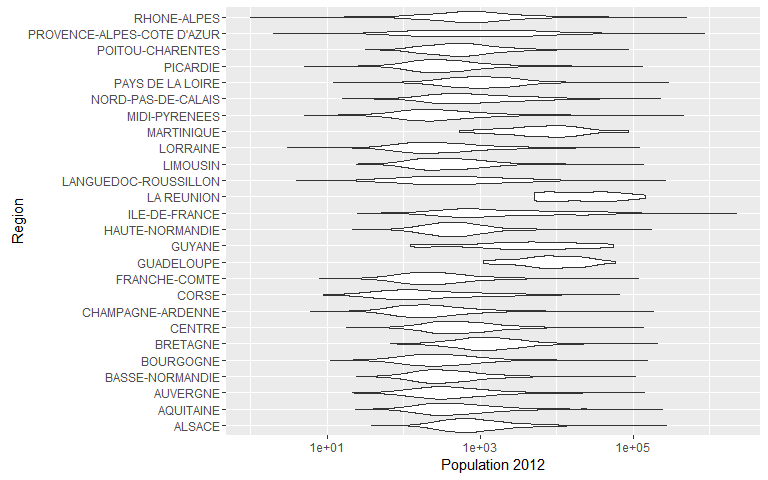

Les graphiques que nous allons créer aujourd'hui sont :
- Les boites à moustaches
- Les histogrammes
- Les courbes de densité
- Nuage de points, séries temporelles et graphiques diagnostics de modélisation statistiques…
12 avril 2016
Les graphiques que nous allons créer aujourd'hui sont :
Les données utilisées sont la population des communes de 1968 à 2012 :
http://www.insee.fr/fr/themes/detail.asp?reg_id=99&ref_id=base-cc-serie-historique
Une fonction sert à les nettoyer
setwd("~/data-visualisationFIN403/") # pour se placer dans le répertoire courant
source("prog/data_mining_communes_fonction.R") # charge la fonction data_import()
population_ville = data_import()
View(population_ville)
Une librairie R de visualisation de données développée par Hadley Wickham en 2005 selon les principes développés par Leland Wilkinson dans son ouvrage The Grammar of Graphics
install.packages(ggplot2) library(ggplot2)
library(ggplot2) ggplot(population_ville) + geom_boxplot(aes(x="France",y= `Population 2012`))

ggplot(population_ville) + geom_boxplot(aes(`Population 2012`,x="ville")) + scale_y_sqrt()

ggplot(population_ville) + geom_boxplot(aes(`Population 2012`,x="ville")) + scale_y_log10()
ggplot(population_ville) + geom_boxplot(aes(y=`Population 2012`,x="France")) +
scale_y_log10() +
geom_point(data= population_ville[population_ville$Communes=="Angers",],
aes(y = `Population 2012` ,x='France'),color="red",size=4)

boxplot(population_ville$`Population 2012`,log="y", ylim=c(100,100000000))

ggplot(population_ville) + geom_boxplot(aes(y=`Population 2012`,x=Region,group=Region))+ scale_y_log10() + coord_flip()
population_ville$dom_tom = population_ville$Region %in%
c("MARTINIQUE","GUYANE","GUADELOUPE","MARTINIQUE","LA REUNION")
p = ggplot(population_ville,aes(y=`Population 2012`,x=Region,group=Region)) + scale_y_log10() +
coord_flip()
p+ geom_boxplot(aes(fill=dom_tom))
p + geom_violin()

p +geom_jitter(alpha=0.1) + geom_boxplot(alpha=0.7)
ggplot(population_ville) + geom_density(aes(x = `Population 2012`))
ggplot(population_ville) + geom_density(aes(x = `Population 2012`)) +scale_x_log10()
ggplot(population_ville) + geom_density(aes(x = `Population 2012`,
fill="kernel density \n estimation")) +
scale_x_log10() +facet_wrap(facets=~Region)
ggplot(population_ville,aes(x=`Population 2012`)) + geom_histogram(binwidth = 10000)
ggplot(population_ville[population_ville$Region=="BRETAGNE",],aes(x=`Population 2012`,fill=Departement)) + geom_histogram(binwidth = 1000) + scale_y_sqrt()+facet_wrap(facets = ~Departement)

library(reshape2) tmp=population_ville[population_ville$Region=="PAYS DE LA LOIRE",c(3,4:10)] tmp.m=melt(tmp) tmp.m$variable=as.numeric(substr(x = tmp.m$variable,12,15)) ggplot(tmp.m) + geom_line(aes(x=as.Date(paste(tmp.m$variable,"-01-01",sep="")),y=value,group=Communes))
tmp.m$Angers=tmp.m$Communes=="Angers" #"#CFCDCD", "#FFFFFF"
tmp.m=tmp.m[tmp.m$value>15000,]
ggplot(tmp.m) + geom_line(aes(x=as.Date(paste(tmp.m$variable,"-01-01",sep="")),
y=value,group=Communes,colour=Angers,size=Angers))+
scale_y_sqrt() +
scale_color_manual(values=c("#5E5C57", "red"))+
scale_size_manual(values=c(1, 3))+
geom_text(data=tmp.m[tmp.m$variable==2012,],aes(x = as.Date(paste(2012,"-01-01",sep=""))
,y=(value),label=Communes))

ggplot(data = tmp.m[tmp.m$Communes=="Angers",], aes(x = variable, y =value)) + geom_point() +geom_smooth()
ggplot(data = tmp.m[tmp.m$Communes=="Angers",], aes(x = variable, y =value)) + geom_point() +geom_smooth(method = "lm")